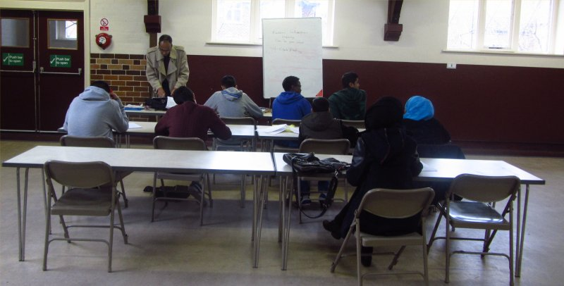

Manchester Tuition Classes
Classes
 Tuition classes offer a unique powerful, flexible and dynamic learning system that focuses on the core subjects of Maths, English and Science in accordance with the National Curriculum. We also specialise in the preparation of 11 plus, Reasoning (Verbal and Nonverbal) and grammar school entrance examinations. The Tuition classes are basically one-to-one tuition within a very small class, tailored and targeted to individual needs, based on regular assessments. The Tuition Classes programme help to form good study habits, increase confidence and develop the overall learning capability.We provide tuition classes for children of age 6 to 20 years, in English, Maths, Science and Reasoning (verbal and nonverbal). We cater for tuition at all levels from KS1 to 4, SATS, GCSE and A levels (AS and A2). We also specialise in the preparation of grammar school entrance and 11 plus examinations. Our teachers have over 20 years' experience in teaching verbal and non-verbal Reasoning and for other entrance examinations.
The Tuition Classes are held every Saturday at the Old Trafford Community Centre, and every Sunday at the Birch Community Centre. The Saturday classes at the old Trafford community centre runs from 10:30 to 1:30 and the Sunday Classes at the Birch Community Centre run from 10:30 to 12:30.
The Tuition Classes follow the British National Curriculum. The tuition centres works with children from ages 6 – 20 in a very safe, friendly and relaxed environment.
The tuition centres works with children of all abilities ensuring there is a consistent improvement in their work. Since Tuition Classes has been operating for nearly 12 years, we have experience in working with a range of abilities and we ensure quality tuition is consistently offered at low prices! Each child is regularly assessed to determine what level they are operating and also to determine which areas need to be targeted. One to one tuition will be delivered in a very small class of around 5 to 7 children by one or two teachers per class.
All teaching is carried out by fully qualified very experienced teachers who have had a current CRB check. The Old Trafford centre is open throughout the year apart from one week in Christmas, one week in Easter. The Birch community centre classes run during school term times.
For further information and registration, please contact us.
-
Saturday Tuition Classes
We specialise in Maths, English, Science and 11 plus Reasoning (Verbal & Nonverbal) for Children and Teenagers (Ages 5 - 16). We focus on teaching children and teenagers from 10:30am – 1:30pm at our Old Trafford Community Centre. All teaching is carried out by fully qualified CRB checked teachers who currently teach in UK schools and colleges. Not only do we help children improve, and work on topics they find challenging but we also prepare them for SATs and GCSE and 11 plus exams. We assess our learners on a monthly basis and invite parents in for Teacher - Parent Consultation session to discuss their children's progress with our teachers.The Saturday Tuition Classes run during every Saturday of the year except the Christmas week and Easter Saturday.
Address : St John's Centre
St John's rd
Old Trafford
Manchester M16 7GX
-
Sunday Tuition Classes
We specialise in Maths, English, Science and 11 plus Reasoning (Verbal & Nonverbal) for Children and Teenagers (Ages 5 - 16). We focus on teaching children and teenagers from 10:30am – 12:30pm in our Birch Community Centre. All teaching is carried out by fully qualified CRB checked teachers who currently teach in UK schools and colleges. Not only do we help children improve, and work on topics they find challenging but we also prepare them for SATs and GCSE and 11 plus exams. We assess our learners on a monthly basis and invite parents in for Teacher - Parent Consultation session to discuss their children's progress with our teachers.
The Sunday Classes will close during the Manchester school holidays.
Address : Birch Community Centre
Brighton Grove
Rusholme
Manchester M14 5AR - click here for map
Prices
- £7.50/Class